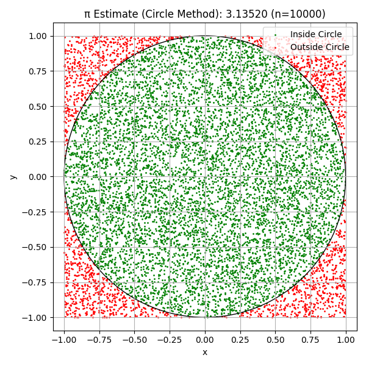
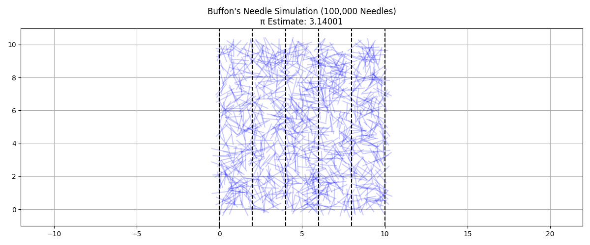
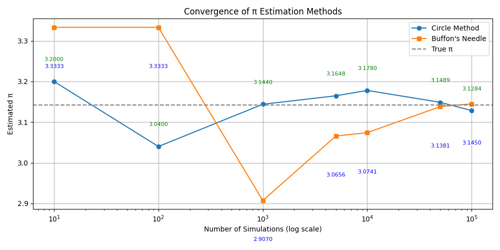

Problem 2
🎲 Estimating π Using Monte Carlo Methods
📌 Introduction
Monte Carlo simulations are a class of computational algorithms that rely on repeated random sampling to obtain numerical results. One elegant and accessible application is estimating the value of π through probability and geometry.
This project explores two Monte Carlo techniques for estimating π:
- Using random points inside a square and circle
- Using Buffon’s Needle experiment
These simulations provide visual insight into the relationship between randomness and mathematical constants.
🧠 Method 1: Monte Carlo Estimation with Random Points
🔍 Concept
Imagine a square with a circle inscribed inside it. If you randomly generate points in the square, the proportion of points that fall inside the circle is related to π.
Let: - The square be of size 2×2 (centered at the origin) - The circle have a radius of 1
Then the area ratio is:
π ≈ 4 × (points inside circle / total points)
As the number of points increases, this ratio converges to π.
📐 Method 2: Buffon’s Needle Experiment
🔍 Concept
Buffon’s Needle is a classic probability problem where a needle of length L is dropped on a floor with parallel lines spaced D units apart.
The probability P that the needle crosses a line is related to π by:
π ≈ (2 × L × number of throws) / (D × number of crossings)
This method uses randomness and geometry to estimate π through repeated trials.
💻 Python Implementation
Below is the complete Python code to simulate both methods, visualize results, and compare their convergence:
import numpy as np
import matplotlib.pyplot as plt
def estimate_pi_circle(n_points=10000, visualize=True):
x = np.random.uniform(-1, 1, n_points)
y = np.random.uniform(-1, 1, n_points)
inside = x**2 + y**2 <= 1
pi_estimate = 4 * np.sum(inside) / n_points
if visualize:
plt.figure(figsize=(6, 6))
plt.scatter(x[inside], y[inside], s=1, color='green', label='Inside Circle')
plt.scatter(x[~inside], y[~inside], s=1, color='red', label='Outside Circle')
circle = plt.Circle((0, 0), 1, color='black', fill=False)
plt.gca().add_artist(circle)
plt.title(f'π Estimate (Circle Method): {pi_estimate:.5f} (n={n_points})')
plt.xlabel("x")
plt.ylabel("y")
plt.axis('equal')
plt.legend()
plt.grid(True)
plt.tight_layout()
plt.show()
return pi_estimate
def estimate_pi_buffon(n_drops=100000, needle_length=1.0, line_spacing=2.0, visualize=True):
if needle_length > line_spacing:
raise ValueError("Needle length must be ≤ distance between lines.")
x_center = np.random.uniform(0, line_spacing / 2, n_drops)
theta = np.random.uniform(0, np.pi / 2, n_drops)
crosses = x_center <= (needle_length / 2) * np.sin(theta)
crossings = np.sum(crosses)
if crossings == 0:
return np.nan
pi_estimate = (2 * needle_length * n_drops) / (line_spacing * crossings)
if visualize:
plt.figure(figsize=(12, 5))
sample = 1000 # Visualize only 1000 for performance
for _ in range(sample):
x0 = np.random.uniform(0, line_spacing * 5)
y0 = np.random.uniform(0, 10)
angle = np.random.uniform(0, np.pi)
x1 = x0 + (needle_length / 2) * np.cos(angle)
y1 = y0 + (needle_length / 2) * np.sin(angle)
x2 = x0 - (needle_length / 2) * np.cos(angle)
y2 = y0 - (needle_length / 2) * np.sin(angle)
plt.plot([x1, x2], [y1, y2], 'b-', alpha=0.2)
for i in range(6):
plt.axvline(x=i * line_spacing, color='black', linestyle='--')
plt.title(f"Buffon's Needle Simulation (100,000 Needles)\nπ Estimate: {pi_estimate:.5f}")
plt.axis('equal')
plt.grid(True)
plt.tight_layout()
plt.show()
return pi_estimate
def convergence_analysis():
trials = [10, 100, 1000, 5000, 10000, 50000, 100000]
estimates_circle = [estimate_pi_circle(n, visualize=False) for n in trials]
estimates_buffon = [estimate_pi_buffon(n, visualize=False) for n in trials]
plt.figure(figsize=(10, 5))
plt.plot(trials, estimates_circle, label="Circle Method", marker='o')
plt.plot(trials, estimates_buffon, label="Buffon's Needle", marker='s')
plt.axhline(np.pi, color='gray', linestyle='--', label='True π')
for x, y in zip(trials, estimates_circle):
plt.text(x, y + 0.05, f"{y:.4f}", fontsize=8, ha='center', color='green')
for x, y in zip(trials, estimates_buffon):
plt.text(x, y - 0.1, f"{y:.4f}", fontsize=8, ha='center', color='blue')
plt.xscale("log")
plt.xlabel("Number of Simulations (log scale)")
plt.ylabel("Estimated π")
plt.title("Convergence of π Estimation Methods")
plt.legend()
plt.grid(True)
plt.tight_layout()
plt.show()
if __name__ == "__main__":
print("Estimating π using Circle Method:")
pi_circle = estimate_pi_circle(10000)
print("\nEstimating π using Buffon's Needle Method:")
pi_buffon = estimate_pi_buffon(100000)
print("\nRunning Convergence Analysis:")
convergence_analysis()



📊 Analysis
| Method | Description | Convergence | Visual Insight |
|---|---|---|---|
| Circle Method | Geometric simulation inside square | Fast | Clear and intuitive |
| Buffon’s Needle | Needle drops over parallel lines | Slower | More complex |
Both methods demonstrate the power of randomness in numerical computation. The circle method is simpler and converges faster, while Buffon's Needle offers historical context and insight into geometric probability.